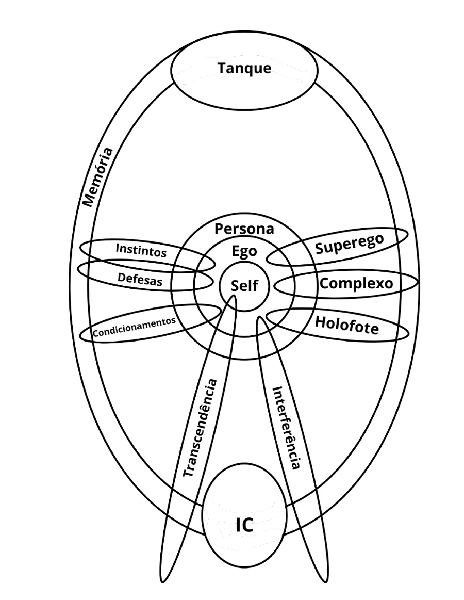

Virtologia
Virtudes, quando desenvolvidas por neuroplasticidade, tratam saúde mental
Essa frase soa estranha na primeira leitura. Vale ler de novo, porque ela é literal: virtude aqui não é valor moral, é um conjunto de redes neurais que se constrói com exercícios de neuroplasticidade.
A Virtologia diante de outras linhas
A Virtologia não nasceu contra ninguém. Ela se apoia em quem veio antes e acrescenta o que ficou faltando.
Psicanálise
Descreveu o inconsciente e mostrou que muito do que fazemos não passa pela nossa decisão. A Virtologia acrescenta um método para construir estrutura nova, em vez de só trazer para a consciência o que estava escondido.
Terapia cognitivo-comportamental
Mostrou que o pensamento pode ser examinado e corrigido, e criou técnicas que funcionam para diminuir sintoma. A Virtologia faz a pergunta seguinte: qual estrutura construir?
Terapias holísticas e integrativas
Trouxeram de volta a ideia de que a pessoa é uma coisa só, corpo e história juntos. A Virtologia acrescenta a explicação do que acontece no cérebro, escrita de um jeito que pode ser testada.
Neurociência aplicada à terapia
Mostrou que compreender não basta. A Virtologia parte disso e vai adiante: neuroplasticidade é neutra, constrói tanto o que faz bem quanto o que adoece.
Se quiser ver a comparação completa, a Virtologia foi julgada pelas mesmas seis perguntas que um manual internacional usa para julgar as dezoito maiores teorias da personalidade. Clique aqui.
Primeiro, tire a palavra virtude do sentido comum
Quando alguém ouve "virtude", pensa em valor moral. Em ser boa pessoa. Em sermão.
Esqueça isso. Na Virtologia, virtude é um conjunto de redes neurais trabalhando numa configuração específica. É isso que faz o cérebro processar a mesma situação de outro jeito.
E esse conjunto não nasce pronto. Ele se constrói com exercícios de neuroplasticidade: um treino repetido, ao longo de muitos dias, que grava aquilo como memória de longo prazo.
Neuroplasticidade
A capacidade que o cérebro tem de mudar fisicamente com aquilo que a pessoa repete.
Memória de longo prazo
A memória permanente. Aquela que funciona sem você precisar lembrar dela.
Exercício de neuroplasticidade
O treino específico que leva uma virtude da primeira para a segunda.
No fim desse processo, o comportamento virtuoso passa a acontecer sozinho. Sem esforço, sem vigilância, sem a pessoa precisar querer.
E é aí que o sintoma cede.
O que significa fazer alguém funcionar de maneira saudável
Um paciente pode entender perfeitamente de onde vem a própria ansiedade e continuar ansioso. Pode saber que precisa perdoar e continuar com o ódio fervendo. Pode ter feito anos de terapia, explicar a própria história com precisão, e reagir na segunda-feira exatamente como reagia antes.
Isso acontece porque entender e funcionar são coisas diferentes, e ficam em lugares diferentes do cérebro.
Quem se controla ainda sente. Quem funciona de maneira saudável já nem sente.
Alguém que segura a raiva por regra continua com a raiva por dentro, e o corpo paga o preço. Alguém em quem a aceitação foi construída simplesmente não gera mais a raiva.
E não se trata de devolver a pessoa a um estado anterior. Muitas nunca funcionaram assim. A estrutura saudável ainda não existe, e é ela que precisa ser construída.
Fazer a pessoa funcionar de maneira saudável é isso: fazer a resposta saudável acontecer sozinha, sem esforço e sem precisar se vigiar. E isso não se consegue explicando. Só construindo, com exercícios de neuroplasticidade, até virar memória de longo prazo.
A Virtologia trabalha com ansiedade, depressão, transtornos de personalidade, borderline, TOC, compulsões, automutilação, pensamento suicida, pânico e fibromialgia, entre outros casos, com um método que vai na causa e não só no sintoma.
Por que virtude trataria alguma coisa?
Essa é a pergunta certa. Mas a resposta depende de uma segunda pergunta:
O que adoece uma pessoa?
Pense numa pessoa fazendo exatamente o que ela não gostaria de fazer. Naquela hora, ela não estava consciente. E se não era a consciência que estava no comando, o que era?
Os instintos primitivos, os condicionamentos que ela aprendeu na vida e na formação do caráter, e o que vem da genética. E a base genética mais forte de qualquer ser vivo é uma só: sobreviver.
O ser humano sobrevive de dois jeitos. Pelo egoísmo, que coloca a própria vida acima das outras. E pelo orgulho, que garante o lugar no grupo.
Existe uma mensagem gravada no tronco cerebral, que é a parte mais antiga e mais básica do cérebro, aquela que controla a respiração e os batimentos. A mensagem diz uma coisa só: em grupo eu sobrevivo. Sozinho eu morro.
E como é que eu garanto meu lugar no grupo? Sendo importante. Sendo aceito. Sendo aprovado. Tendo poder.
Esse impulso nasce lá embaixo, no tronco, mas quem decide o que fazer com ele é o córtex, a parte de cima. E é nessa passagem que se formam duas coisas dentro da gente.
A Virtologia não trata essas duas coisas como defeito moral. Trata como dois sistemas descritos no cérebro, cada um com nome, com circuito e com previsão que pode ser testada.
Sistema Neurofuncional do Orgulho
O cérebro mede o tempo todo o seu lugar em relação aos outros. Toda situação passa por uma pergunta silenciosa: isso me diminui?
Esse cálculo de posição acontece no circuito de recompensa e é colado no "eu" pelas regiões que a pessoa usa quando pensa em si mesma.
As expressões disso são mais do que parecem: poder, vaidade, dominância, necessidade de aprovação, controle, reconhecimento. E timidez.
Sistema Neurofuncional do Egoísmo
Toda situação social exige uma decisão: quanto vale o que eu ganho, e quanto vale o que o outro ganha? Essa conta é resolvida no córtex pré-frontal, e o egoísmo é quando ela pende sempre para o mesmo lado.
Existe uma região que serve de freio, a junção temporoparietal, que aumenta o peso do outro na hora da tentação. No egoísmo, esse freio não corrige a conta.
Agressividade, vício, indiferença, controle e corrupção parecem coisas diferentes. Compartilham o mesmo núcleo.
Repare no que isso muda. Não são muitos egoísmos nem muitos orgulhos, cada um com uma explicação diferente. São dois sistemas, e cada comportamento é uma expressão deles.
A Virtologia é explícita sobre o nível dessa proposta: não se afirma que existe uma rede cerebral nova e exclusiva. Afirma-se que essas funções, já descritas separadamente pela neurociência, formam um conjunto que funciona junto. E o artigo diz o que derrubaria a tese: se os comportamentos egoístas não convergissem para o mesmo núcleo de decisão, o SNE estaria refutado.
Sobre a timidez, vale parar um segundo. Aquele tímido que parece o mais inofensivo de todos costuma ser o mais preso ao orgulho. Porque de onde vem a vergonha de falar em público? De ser insuportável a ideia de ser criticado. Isso não é humildade. É o contrário dela.
Os dois existem em todo mundo, e não são defeito de caráter. O problema é quando eles passam a governar a pessoa.
E é daí que vem quase todo o sofrimento psíquico.
Transtornos de personalidade. Ansiedade. Depressão. Compulsão. Relações que adoecem. Tudo isso, quando não tem causa puramente química, nasce de um cérebro governado por orgulho e egoísmo.
Uma pergunta feita a mais de dez mil presos
O Instituto trabalha em unidades prisionais toda semana. Depois de explicar o que é o orgulho, a pergunta é sempre a mesma: alguém aqui cometeu um crime que não foi por orgulho?
Mais de dez mil pessoas já ouviram essa pergunta. Nunca veio uma resposta contrária. Todos dizem: foi por vaidade, foi por inveja, foi por poder, foi por não aceitar ficar por baixo.
O ponto central da Virtologia
Quando a pessoa faz o que não queria fazer, quem está no comando?
Quando alguém age de um jeito que depois lamenta, faz exatamente o que não gostaria de fazer, é porque naquele momento não estava consciente. E se não era a consciência que estava no comando, o que era?
Eram os instintos primitivos, os condicionamentos aprendidos na vida e na formação do caráter, e o que vem da genética. E qual é a base genética mais forte de qualquer ser vivo? Sobreviver.
O ser humano sobrevive de dois jeitos:
Pelo egoísmo
Colocar a própria vida acima das outras. O meu antes do seu.
Pelo orgulho
Ser aceito, aprovado, importante para os outros. Somos uma espécie que aprendeu que sobreviver em grupo é mais eficiente do que sobreviver sozinho. Quem tem lugar no grupo é protegido, e a chance de morrer diminui.
Orgulho e egoísmo são as duas expressões básicas do primitivismo humano. Identificar as duas é o grande trunfo da Virtologia, e é nelas que ela atua.
E ela faz isso com uma leitura da personalidade mais profunda que a das outras linhas: as Faixas de Evolução neurológica, as necessidades, o temperamento, o aparelho psíquico. É o que permite saber o que está no comando de cada pessoa, e por isso a Virtologia atua em duas frentes.
A saúde mental de cada pessoa
Os transtornos estão ligados a defesas: respostas automáticas do cérebro, que fogem da consciência. Elas saem do lado instintivo, do orgulho e do egoísmo. Quando a virtude tira o poder dos dois, a defesa perde a força.
O futuro da sociedade
O mundo precisa de pessoas menos egoístas, que queiram o bem do outro. Quando o ser humano deixa de se colocar acima dos outros e de buscar poder, status e importância acima do bem comum, a sociedade se torna um lugar melhor: sem guerra, sem fome, sem desigualdade.
É o âmbito pessoal, da saúde mental e do tratamento, junto com o âmbito coletivo, do futuro da humanidade. A Virtologia trabalha nos dois ao mesmo tempo.
O orgulho por dentro, e o que a humildade faz com ele
A Virtologia descreve o orgulho como uma cadeia que sobe pelo cérebro. Cada degrau faz uma coisa:
-
1
Tronco cerebral
A parte mais antiga, com uma mensagem de sobrevivência: sem um lugar no grupo, estou em risco.
-
2
Estriado ventral
O circuito de recompensa. É onde essa urgência vira uma conta: quanto eu valho em relação aos outros.
-
3
Córtex pré-frontal medial e cingulado posterior
As regiões que a pessoa usa quando pensa em si mesma. É aqui que a conta é colada no "eu": deixa de ser eu perdi essa e vira eu sou menos.
-
4
Ínsula
Transforma isso em sensação no corpo: o calor no peito, o frio na espinha, o aperto. É o que faz a posição deixar de ser um dado e virar emoção sentida.
-
5
Sistema de mentalização
Insere o olhar do outro, calibrando tudo pelo que a pessoa imagina que estão pensando dela.
A humildade, na Virtologia, não é desligar o tronco cerebral. Isso não é possível nem seria desejável. É desligar o vínculo entre o seu valor e a sua posição em relação aos outros.
É um deslocamento treinado nessa cadeia inteira, e é por isso que a palavra "humildade" comunica melhor do que a lista de regiões: ela nomeia o resultado. Mas não é a mesma coisa que a lista, e a Virtologia descreve as duas.
Com o egoísmo acontece a mesma coisa, e a virtude que o corrige é a abnegação: o deslocamento treinado daquela conta entre o eu e o outro. Não é anular a si mesmo. É o cérebro passar a dar ao outro um peso que antes ele não dava.
A obra é cuidadosa neste ponto: nenhuma região do cérebro executa sozinha uma função dessas, e várias das regiões citadas participam de muitas outras funções. O que se descreve é um conjunto articulado trabalhando junto, e é assim que deve ser lido.
A base neurocientífica
O que muda no cérebro ao usar a neuroplasticidade da Virtologia
A Virtologia não trata orgulho e egoísmo como defeito moral. O livro Fundamentos da Virtologia, terceira edição, descreve os dois como sistemas neurofuncionais, com os circuitos de cada um.
Dois sistemas: o SNO, do orgulho, calcula a minha posição. O SNE, do egoísmo, calcula a minha vantagem.
- 1Pré-frontal dorsolateral
- 2Pré-frontal medial
- 3Pré-frontal ventromedial
- 4Cingulado anterior e ínsula
- 5Estriado ventral
- 6Cingulado posterior
- 7Junção temporoparietal
- 8Amígdala
- 9Área tegmental ventral
- 10Tronco cerebral
SNOSNEos doisreguladororigem
Posições aproximadas, só para localizar.
O regulador
Lobo frontal · córtex pré-frontal dorsolateral
É onde as virtudes são inscritas. Quando ele deixa de conter os dois sistemas, acontece o que a Virtologia chama de apagão: o primitivo assume o comando do ato.
SNO · Sistema Neurofuncional do Orgulho
Calcula a minha posição
- Estriado ventral: dá valor à posição em relação aos outros
- Pré-frontal medial e cingulado posterior: referem tudo ao eu
- Ínsula anterior e cingulado anterior: a dor social, quando a crítica dói
- Junção temporoparietal: o olhar do outro
SNE · Sistema Neurofuncional do Egoísmo
Calcula a minha vantagem
- Pré-frontal ventromedial e dorsomedial: a conta entre o eu e o outro
- Junção temporoparietal: o freio que aumenta o peso do outro
- Amígdala: amplifica ameaça e desejo
- Área tegmental ventral e accumbens: a recompensa sequestrada na compulsão
A origem
Tronco cerebral · a mensagem de sobrevivência
No orgulho: sem um lugar no grupo, estou em risco. No egoísmo: a minha vida primeiro.
Os instintos primitivos têm sistema e circuito
Os instintos que o ser humano partilha com o animal se distribuem, sem resto, entre os dois sistemas. O livro mostra qual sistema está por trás de cada um e o circuito do apagão:
| Instinto primitivo | Sistema | Circuito do apagão |
|---|---|---|
| Matar / agredir | SNO (dominância, vingança) + SNE (agressão defensiva) | amígdala → hipotálamo → PAG |
| Transar / possuir | SNE (desejo, saliência) | amígdala + VTA/accumbens |
| Fugir da realidade | SNE (escapismo) | recompensa sequestrada + reforço negativo (Koob) |
| Afagar as próprias dores | SNE (autoconsolo aditivo) | accumbens + amígdala estendida |
E o que impede o apagão? Não é a ausência do impulso. É a capacidade, só humana, de reprogramar esses sistemas por meio de ideias. A Humildade reparametriza o SNO; a Abnegação reparametriza o SNE. A virtude não é um freio aparafusado por cima do sistema: é a retêmpera do próprio motor.
Quadro do Fundamentos da Virtologia, p. 160. Os circuitos se sobrepõem; a atribuição é de ênfase funcional, não de separação anatômica.
Como uma virtude vira cérebro
Para a Virtologia, treinar uma virtude é reconstruir tecido cerebral. O livro resume a memória de longo prazo numa fórmula com a mesma forma da Lei do Fluxo:
Memória de longo prazo = Atenção × Emoção × Cognição × Repetição
É multiplicação, não soma: se um fator vai a zero, o resultado inteiro vai a zero. Sem atenção, nada entra. Sem emoção, entra e não fica. Sem cognição, fica e não se integra. Sem repetição, integra e se apaga.
- MolecularGenes são ativados e proteínas novas são fabricadas. Nenhuma mudança duradoura acontece sem isso.
- NeuronalO nascimento, a maturação e a sobrevivência de neurônios.
- DendríticoAs espinhas que recebem as conexões crescem, mudam de forma e se multiplicam.
- SinápticoNascem sinapses novas, e as que já existem ficam mais fortes ou mais fracas.
O protocolo de cada virtude foi montado para mobilizar essa cascata inteira. Cada passo tem uma razão no cérebro:
| Passo do protocolo | O que ele aciona no cérebro |
|---|---|
| Ler a afirmação em voz alta | A via fonológica e o retorno da própria voz reforçam o registro |
| Escrever a afirmação à mão | Os circuitos motores somam outra via de codificação |
| Meditar dez minutos | O pré-frontal treina a atenção, e o ensaio mental ativa parte dos circuitos da ação |
| Recuperar, sem consultar | Lembrar sem olhar fortalece o acesso à conduta, não à frase |
| Escrever a frase de gatilho | Cria um par gatilho-resposta disponível sob pressão |
| Aplicar em situação real | A memória fica gravada junto com as pistas da situação em que vai ser usada |
| Registrar o erro e o acerto | O sinal de erro do cingulado anterior ajusta a próxima tentativa |
| Dormir | A consolidação acontece no sono profundo |
Como isso vira transtorno?
Um menino de oito anos vê a Mercedes nova do pai parada na garagem e pensa: vou ajudar meu pai, vou lavar o carro dele.
Pega uma esponja de aço. Risca o carro inteiro.
O pai chega e surra ele.
Agora repare no que o cérebro daquele menino registrou. A atitude dele foi tomar iniciativa para agradar. E o que voltou foi dor.
A partir dali, toda vez que aparecer a vontade de tomar iniciativa, o cérebro vai avisar: isso dói, evita. E ele vai construir outro jeito de agir, só para nunca mais passar por aquilo.
Isso é uma defesa. E é assim que o caráter vai sendo formado: atitude, resposta do ambiente, e o cérebro decidindo o que repetir e o que evitar para sempre.
Freud e Anna Freud descreveram os mecanismos de defesa há quase cem anos, e a psicologia trabalha com eles desde então. O que a Virtologia acrescenta é dizer de onde a defesa tira a energia dela: do sistema antigo, que só sabe se defender por orgulho e por egoísmo.
A defesa se repete a vida inteira, endurece, e vira uma casca permanente. A Virtologia chama isso de couraça.
Vista de fora, essa casca é o que os manuais chamam de transtorno de personalidade.
O narcisismo é uma defesa que endureceu. A frieza de quem não deixa ninguém chegar perto é uma defesa que endureceu. Aquele padrão que se repete em toda relação, em todo emprego, em toda discussão, é uma defesa que endureceu.
Por isso o virtólogo não começa pelo sintoma. Diante de um padrão, ele não pergunta primeiro qual é o transtorno. Ele pergunta: do que essa pessoa está se defendendo? E qual virtude falta para ela não precisar mais dessa defesa?
Ah, mas e a esquizofrenia? E o autismo? E o bipolar?
Não vêm daí. São condições com origem genética, e a Virtologia não diz o contrário nem propõe tratar elas com virtude.
O que ela observa é outra coisa. Uma pessoa com qualquer uma dessas condições também pode estar com o cérebro funcionando no modo primitivo, como qualquer um de nós. E nessa parte, desenvolver virtudes ajuda ela tanto quanto ajuda qualquer pessoa.
Não trata a condição de nascença. Trata o que está por cima dela, sempre junto com o cuidado médico.
O que muda quando a virtude fica gravada
Se o que adoece é o orgulho e o egoísmo governando, então o que trata é aquilo que tira o poder dos dois.
É isso que a virtude faz, quando é construída com exercícios de neuroplasticidade até virar memória de longo prazo. E o resultado dá para ver de fora.
Quem se controla ainda sente. Quem construiu a estrutura já nem sente.
Quem segura a raiva por regra continua com a raiva fervendo por dentro, e o corpo cobra a conta. Quem construiu a aceitação simplesmente não gera mais aquela raiva.
E junto com os caminhos novos, muda a química do corpo:
Dopamina
O mensageiro do prazer. Passa a responder mais ao vínculo de verdade e menos ao status.
Serotonina
Ligada ao controle dos impulsos. Segura melhor a pausa antes da reação.
Cortisol
O hormônio do estresse. Para de deixar o corpo em alerta o tempo todo.
Oxitocina
Ligada ao afeto. Sustenta as relações que antes se desgastavam.
Isso acontece porque mente, sistema nervoso, hormônios e sistema de defesa do corpo não são coisas separadas. Funcionam como uma rede só. Treinar virtude é treinar essa rede inteira ao mesmo tempo.
Uma mulher que não podia receber visita há cinco anos
Ela estava presa numa unidade feminina e era considerada violenta demais para qualquer contato. Trocava pão por remédio para acumular comprimidos. Tentava suicídio o tempo todo. Ninguém podia chegar perto sem risco de agressão.
Foram trabalhadas três virtudes com ela, por exercícios de neuroplasticidade: humildade, brandura e individuação.
Dois meses depois, o vídeo gravado com ela mostrava outra pessoa. E um ano e meio depois, no acompanhamento, ela continuava bem.
O relato completo, com o registro em vídeo, está na aula aberta.
Ah, mas não bastaria a pessoa entender o próprio problema?
Não. E isso a neurociência já sabe há bastante tempo, mesmo que boa parte da clínica ainda trabalhe como se não soubesse.
Eric Kandel ganhou o Nobel mostrando que conhecer não é a mesma coisa que aprender. O que a pessoa entende fica numa memória curta, que dura poucas horas. A reação vem de caminhos construídos ao longo de anos, que disparam sozinhos, antes de qualquer pensamento.
Por isso tanta gente entende a própria história com precisão e continua reagindo igual. A explicação não chega até onde a reação mora.
Só que saber disso não resolve nada sozinho. O cérebro constrói qualquer coisa que você repita: ele aprende a confiar e aprende a desconfiar com a mesma facilidade. A pergunta que importa não é se dá para mudar o cérebro. É o que construir dentro dele.
O que dizem profissionais que já atendiam
Psicólogos, psicanalistas e terapeutas de outras linhas estudaram a Virtologia e passaram a trabalhar com ela:
"Melhorou o pânico e a ansiedade da minha paciente em apenas 14 dias."
Dâmaris · Psicóloga clínica
"Não tem como não falar que é revolucionário. Depois que você conhece, não tem como não trabalhar com isso."
Carina · Neuropsicopedagoga, psicanalista e terapeuta ABA
"É libertador. Para consultório, foi uma revolução e tanto."
Fernanda · Psicóloga clínica (TCC)
"A Virtologia é o 'como' de todas as terapias. Linguagem fácil, compreensível, onde qualquer um pode fazer."
Grace Campos · Psicanalista
"Quando você vai percebendo, você vê que aquela não é mais a mesma pessoa que comecei a atender."
Dinorá · Psicóloga especialista em autismo
"Quando você vê, você já está agindo. Muito mais rápido e pontual do que outras terapias."
Rosa · Psicóloga
Relatos de quem aplica a Virtologia
Profissionais e alunos contam o que mudou nos atendimentos e na própria vida.
Tem mais: relatos de atendimento com as virtudes e mensagens de alunos. Ver todos os depoimentos.
Em que ordem? Não dá para pular degrau
Falta a peça que impede tudo isso de virar conselho de autoajuda.
Imagine entrar numa penitenciária e perguntar: quem aqui meditou hoje? Alguém está sentindo falta de um momento de introspecção?
Não faz o menor sentido. E não é porque aquelas pessoas sejam piores. É porque o cérebro delas está funcionando num modo em que introspecção nem aparece como vontade.
Cada modo de funcionar tem um conjunto de necessidades diferente. No modo mais primitivo, o que move é importância e segurança. Um pouco acima, aparece conforto, organização, ter as coisas. Mais acima, aparece a vontade de se desenvolver, de explorar, de entender.
A Virtologia chama esses modos de faixas de evolução neurológica.
Onde isso avança sobre Maslow
Abraham Maslow propôs, em 1943, uma escala de necessidades humanas que virou a pirâmide que todo estudante de faculdade conhece. Na base, comer e dormir. No topo, a realização pessoal, e mais tarde ele acrescentou a transcendência.
Maslow acertou a escala. O que ele não explicou foi por que uma pessoa fica presa num degrau e outra sobe.
A Virtologia responde isso: o degrau em que a pessoa está não é escolha nem força de vontade. É a estrutura neurológica que ela construiu até ali. E é por isso que existe um caminho para subir, com exercícios específicos para cada degrau.
Ler a faixa de alguém é o que permite saber qual é o próximo degrau possível, e qual virtude abre esse degrau.
É isso que separa método de conselho. Sem faixa, "desenvolva virtudes" é conselho. Com faixa, vira plano: essa pessoa está aqui, o próximo passo é esse, e a virtude que constrói esse passo é aquela. E aí entram os exercícios de neuroplasticidade daquela virtude específica.
Cobrar de alguém uma maturidade que o cérebro dele ainda não sustenta não acelera nada. Só gera frustração, e nada fica gravado.
Onde isso avança sobre Viktor Frankl
Viktor Frankl, psiquiatra que sobreviveu aos campos de concentração, escreveu que o ser humano se sustenta pelo sentido, pelo propósito. É uma das ideias mais importantes da psicologia do século XX.
A Virtologia concorda, e acrescenta uma condição que muda a prática: viver um propósito não está disponível para qualquer pessoa em qualquer momento.
Quem está numa faixa em que o cérebro ainda opera por importância, poder e vaidade não consegue viver por propósito, por mais que queira e por mais que alguém insista. Primeiro se constrói a estrutura. O propósito vem depois, e vem sozinho.
Ah, mas então quem está numa faixa mais baixa é pior?
Não. Faixa não mede o valor de ninguém. Ela descreve como o cérebro está funcionando agora, não quem a pessoa é.
E ela não é uma coisa só: a mesma pessoa pode estar bem desenvolvida na aceitação e ainda bem primitiva no orgulho.
E ela não é sentença. Ela muda. O trabalho todo existe justamente para mudar ela.
Ah, mas quando eu subir de faixa, eu deixo de ter as necessidades de antes?
Não. Você vai continuar querendo segurança, vai continuar querendo importância. O que muda é a pressão que isso faz no seu cérebro.
Antes, aquilo era o que derrubava o seu disjuntor. Depois, continua existindo, mas já não manda em você.
A fórmula que junta tudo
A Virtologia reúne todos esses elementos numa fórmula, a Lei do Fluxo:
PRF = (I × E) × FA × PO × PS × LV
Duas pessoas passam pela mesma situação e saem dela de jeitos completamente diferentes. A fórmula explica por quê:
Percepção, Reação e Fluxo
O resultado. Como a pessoa enxergou aquilo, como reagiu, e o quanto a vida dela flui depois.
Estímulo
O que aconteceu. O fato bruto, igual para todo mundo que estava ali.
Intensidade
O quanto aquele fato pesou para essa pessoa. A mesma frase é um comentário para um e uma facada para outro.
Faixa de Evolução neurológica
Qual parte do cérebro está mandando na hora em que o estímulo chega.
Propulsores
O que move essa pessoa agora: as necessidades, a falta que ela carrega, o propósito, a fase da vida em que está.
Personalidade
Temperamento, caráter, identidade e couraça. Tudo o que ela construiu até aqui.
Leis da Vida
Movimento, caos e servir. As regras que valem para qualquer pessoa, queira ela ou não.
Repare que é multiplicação, não soma. Se um dos fatores der zero, o resultado dá zero também.
É isso que deixa ler um caso inteiro sem chutar: o que aconteceu, o quanto pesou, com que cérebro a pessoa recebeu aquilo, e o que precisa ser construído agora.

O ser humano pela Virtologia
A escola inteira, em esquemas do próprio livro
Os esquemas abaixo saem do Fundamentos da Virtologia. Não é para decorar agora: é para você ver o tamanho da escola e o nível de detalhe com que a Virtologia lê uma pessoa.
Esquema 1 · A Lei do Fluxo
Tudo o que faz alguém enxergar e reagir de um jeito, numa fórmula só
PRF = E × I × PS × FA × PO × LV
- PRFPercepção, Reação e Fluxo
- EEstímulo
- IIntensidade
- PSPersonalidade
- FAFaixa de Evolução
- POPropulsores
- LVLeis da Vida
É multiplicação, não soma. Se um fator tende a zero, o resultado inteiro tende a zero. Por isso o mesmo acontecimento pode ser leve para uma pessoa e insuportável para outra, e é por isso que o mesmo manejo funciona com um paciente e não com outro.
Esquema 2 · A composição da personalidade
A personalidade tem cinco partes
Personalidade do Ego
- Identidadeo que responde à pergunta "quem eu sou?"
- Caráterconstruído na vida, e em evolução por toda ela
- Temperamentoa base inata e biológica, em 12 campos
- Virtudesas 33 virtudes, gravadas ou não no cérebro
- Psiqueo aparelho psíquico
O comportamento é sempre produto dessa interação, nunca de um fator isolado. O temperamento se estabiliza; o caráter e as virtudes continuam mudando a vida inteira. Os 12 campos do temperamento:
- Extroversão - Introversão
- Nível de atividade - Inatividade
- Ritmicidade - Arritmicidade
- Dominância - Não-dominância
- Pensador - Fazedor
- Simples - Complexo
- Deslumbrado - Cético
- Inibido - Não-inibido
- Afetividade negativa - positiva
- Limiar de resposta - Sensibilidade
- Feminino - Masculino (estilo de energia)
- Intensidade da resposta emocional
Esquema 3 · O aparelho psíquico
Freud, Jung e Lacan construíram cada um o seu. A Virtologia construiu o dela.

Cada parte tem uma função e aparece no comportamento de uma pessoa. A diferença está em que cada peça tem um lugar descrito no cérebro.
- Tanque
- Memória
- Persona
- Ego
- Self
- Superego
- Instintos
- Defesas
- Condicionamentos
- Complexo
- Holofote
- Transcendência
- Interferência
Figura do Fundamentos da Virtologia, terceira edição. Toque para ampliar.
Esquema 4 · As Faixas de Evolução neurológica
Quem está no comando, e como a pessoa enxerga o outro
Sete faixas, da mais primitiva à mais elevada. Saber em qual delas o paciente opera muda a condução inteira.
- 1Faixa PrimitivaComandoTronco cerebral; instinto e condicionamentoO outroInexiste como outro: só ambiente e bando
- 2SensaçãoComandoTronco cerebral; pulsão, paladar e prazerO outroObjeto de desejo, medo e ganho
- 3Pré-DesenvolvimentoComandoTronco + límbico; persona e couraçaO outroEspelho que constrói o sujeito
- 4Consciência ParcialComandoDisputa entre persona e EU emergenteO outroComeça a enxergar o outro-realidade
- 5SentirComandoLobo frontal; EU estruturado, movido pelo selfO outroO outro-realidade: o interesse é cuidar
- 6Pré-TranscendênciaComandoSelf; desprendimento da matéria e do desejoO outroO irmão universal; amor e caridade
- 7Amor e Caridade PlenosComandoOrgulho inexistente; integração totalO outroToda a criação como UM
Quadro do Fundamentos da Virtologia, p. 81.
Esquema 5 · As 21 fases da vida e seus mandatos
Cada idade tem uma experiência que o cérebro precisa atravessar
A Virtologia chama de mandato a experiência nuclear que a pessoa precisa viver em cada idade para a personalidade se construir bem. São 21 fases, do útero à longevidade. A cor mostra a faixa possível em cada fase, se as virtudes daquele mandato forem instaladas:
- concepçãoPeríodo Intrauterino
- 0-1Fase Oral
- 1-3Fase Anal
- 3-6Fase Fálica-Genital
- 6-9Fase de Latência
- 9-11Transição para a Adolescência
- 11-13Adolescência Inicial
- 13-15Adolescência Média
- 15-17Adolescência Tardia
- 17-19Limiar da Vida Adulta
- 19-24Jovem Adulto - Independência
- 24-28Jovem Adulto - Consolidação
- 28-30Início da Vida Adulta Plena
- 30-35Vida Adulta - Realização
- 35-40Vida Adulta - Maturidade
- 40-50Meia-Idade - Generatividade
- 50-60Meia-Idade - Consolidação e Transição
- 60-70Terceira Idade - Integridade e Transmissão
- 70-80Terceira Idade - Sabedoria e Aceitação
- 80-90Longevidade - Plenitude
- 90-100Longevidade Extrema - A Unidade
- Primitiva
- Consciência Parcial
- Sentir
- Pré-Transcendência
- Amor e Caridade Plenos
Diante de cada mandato, há três desfechos possíveis:
Bem vivido
A pessoa atravessa a experiência, mesmo dolorosa, e constrói ferramentas para lidar com ela. A virtude se instala.
Não vivido
A experiência não acontece. Não há ferida, mas também não há a aquisição. Fica uma lacuna silenciosa.
Mal vivido
A experiência acontece e não se resolve. Em vez de virtude, instala-se a couraça.
E existe um quarto fator, o tempo: a experiência vivida cedo demais ou tarde demais. Diante de um paciente, o virtólogo pergunta, fase por fase, o que foi bem vivido, o que não foi vivido e o que foi mal vivido. É assim que ele mapeia onde a personalidade está sólida, onde tem lacunas e onde guarda feridas.
Quadro do Fundamentos da Virtologia, p. 356.
Esquema 6 · Das situações da vida às virtudes
Para cada tipo de sofrimento, as virtudes que trabalham juntas
Uma virtude raramente age sozinha. O livro organiza as situações que mais levam alguém a sofrer e o combo de virtudes que cada uma pede:
| Situação da vida | Combo de virtudes | |
|---|---|---|
| I | Perda, luto, separação e fim de ciclo | HumildadeEstado de CertezaAceitaçãoEternidade |
| II | Doença, corpo e saúde | HumildadeAceitaçãoEternidadePerseverançaCuidado com o CorpoBom Humor |
| III | Ansiedade, incerteza, controle e espera | HumildadeEstado de CertezaPaciênciaAceitaçãoIndividuaçãoBranduraGratidão |
| IV | Trauma, mágoa, ressentimento e retaliação | HumildadePerdãoAceitaçãoPagar o Mal com o BemNão JulgamentoReconciliação |
| V | Conflito relacional, família e reconciliação | HumildadeAbnegaçãoReconciliaçãoBranduraPerdãoPureza de CoraçãoHonrar a Família |
| VI | Identidade, Persona, autenticidade e propósito | HumildadeIndividuaçãoVerdadePureza de CoraçãoResponsabilidade |
| VII | Vício, compulsão, impulso e imediatismo | HumildadeAbnegaçãoVerdadeBranduraPaciênciaResponsabilidadeAceitação |
| VIII | Orgulho, vaidade, poder, competição e inveja | HumildadeAbnegaçãoIgualdadeVerdadeNão JulgamentoFraternidade |
| IX | Culpa, autossabotagem, vergonha e perfeccionismo | HumildadeResponsabilidadeBranduraEstado de CertezaBom HumorIndividuação |
| X | Rigidez, julgamento, intolerância e dogmatismo | HumildadeNão JulgamentoBranduraFlexibilidadePureza de CoraçãoPerdão |
| XI | Egoísmo, isolamento, afeto frio | HumildadeAbnegaçãoAmor ao PróximoAjuda ao PróximoFraternidadeIgualdade |
| XII | Materialismo | AbnegaçãoAjuda ao PróximoPureza de CoraçãoEstado de CertezaDesapego |
| XIII | Desenvolvimento, prática e transição entre fases | HumildadeOtimismoBusca do MelhoramentoAceitaçãoPerseverançaEstado de Certeza |
Repare como a Humildade aparece em quase todas as linhas. Sem humildade gravada, nenhuma das outras para de pé.
Quadro do Fundamentos da Virtologia, p. 497.
E isso é só uma parte
A Virtologia ainda lê o ser humano por
- 7Faixas de Evolução neurológica
- 51necessidades humanas
- 33virtudes
- 12campos do temperamento
- 21fases e seus mandatos
- 2sistemas primitivos: SNO e SNE
A Virtologia, na ordem em que se aprende
A Virtologia não é uma técnica solta. É um sistema inteiro, e cada parte só faz sentido depois da anterior.
-
1
Como o ser humano funciona
A Lei do Fluxo, que junta num lugar só tudo o que faz alguém enxergar e reagir de um jeito. E o Aparelho Psíquico: ego, Self, superego, complexos, holofote e tanque.
Freud, Jung e Lacan construíram cada um o seu aparelho psíquico. A Virtologia construiu o dela, com uma diferença: cada peça tem um lugar descrito no cérebro.
-
2
O que move uma pessoa
Os cinco propulsores: as 51 necessidades humanas, a falta, o propósito, os mandatos de cada fase da vida e as convocações.
É aqui que boa parte da clínica erra: confunde doença com necessidade em falta, e trata como transtorno aquilo que era só carência.
-
3
Em que grau o cérebro dessa pessoa opera
As Faixas de Evolução neurológica descrevem quem está no comando: as partes primitivas, que existem para sobreviver e reagir na hora, ou o lobo frontal, que planeja, espera e pensa no outro.
O mesmo conselho que ajuda um paciente destrói o outro. Por isso a condução se ajusta à faixa.
-
4
O que está desregulado
Os dois sistemas que estão por trás da maior parte do sofrimento psíquico: o orgulho, que faz a pessoa viver defendendo a própria posição, e o egoísmo, que faz tudo virar conta de quanto eu ganho.
Mais as defesas, os hábitos automáticos e o inconsciente operacional.
-
5
Como se lê e se conduz cada quadro
Ansiedade e depressão. Transtornos de personalidade, incluindo borderline e narcisismo. TOC e compulsões. Automutilação e pensamento suicida. Pânico e fibromialgia.
Para cada quadro, a Virtologia não oferece apenas o diagnóstico. Oferece o caminho de tratamento.
-
6
Como se transforma uma pessoa
As 33 virtudes e a Pirâmide que organiza a ordem entre elas. Os exercícios de neuroplasticidade que constroem cada uma, quanto tempo levam e com que frequência aplicar.
Sem humildade gravada, nenhuma das outras para de pé. E existe como saber se ficou gravado de verdade ou se o paciente só aprendeu a falar bonito sobre o assunto.
-
7
Como se conduz o atendimento
Como conduzir a sessão, o que perguntar, o que nunca dizer, e como montar o plano de trabalho apontando as três coisas para o mesmo lado: a faixa em que a pessoa está, a necessidade que precisa ser alimentada agora, e a virtude que precisa ser construída junto.
É a hora em que a teoria vira consultório.
O que isso significa fora do consultório
Você já fez um bem para alguém? Um bem de verdade, sem querer postar no Instagram, sem contar para a família no fim de semana, sem ninguém ficar sabendo.
Já fez? Lembra do que sentiu?
Tem pesquisa de neurociência mostrando que, naquele momento exato, o cérebro entra num estado de prazer comparável ao de substâncias que as pessoas gastam dinheiro para conseguir. E ali é de graça.
Isso não é coincidência. Existe uma rede no cérebro que liga toda vez que a pessoa pensa em si mesma. Quando alguém treina humildade e compaixão de verdade, com exercícios repetidos, os estudos mostram essa rede ficando menos ativa. Menos cérebro ocupado com você mesmo, mais cérebro sobrando para o mundo.
Ficar menos egoísta não é uma conquista moral. É o cérebro se desenvolvendo.
E aqui está o ponto que muda tudo. Se o que adoece a pessoa é o orgulho e o egoísmo, então tratar alguém e tornar essa pessoa melhor para os outros é exatamente o mesmo trabalho.
Tratar a saúde mental de alguém e torná-lo melhor para os outros não são duas coisas. São a mesma coisa.
O mesmo trabalho que diminui a ansiedade de uma pessoa deixa ela mais empática, menos presa ao próprio status, mais capaz de se dedicar a algo que serve aos outros. Não são dois resultados. É um só.
E a Virtologia lê os grandes problemas do mundo como sendo a mesma coisa, só que maior. A corrida por importância, o acúmulo de poder, a necessidade de aparecer, a indiferença com o que acontece com o outro. É a mesma primitividade, só que fora de uma cabeça só.
Se essa leitura estiver certa, o que a Virtologia propõe não é só gente com menos sintoma. É uma sociedade que produz menos daquilo que faz as pessoas adoecerem.
Por isso a Virtologia atua em duas frentes ao mesmo tempo: a saúde mental de cada pessoa e o futuro da humanidade.
O que costumam perguntar
A Virtologia substitui a minha linha?
Não é preciso abandonar nada. Profissionais de diversas linhas estudam a Virtologia e decidem, a partir do que observam na prática, se integram ou se adotam. Muitos passaram a trabalhar só com ela, por escolha própria.
Com quais quadros a Virtologia trabalha?
Ansiedade, depressão, transtornos de personalidade, borderline, narcisismo, TOC, compulsões, automutilação, pensamento suicida, pânico e fibromialgia, entre outros. Para cada um, a leitura da Virtologia sobre o que sustenta aquilo, e o caminho de tratamento.
Isso é uma coisa científica?
A Virtologia é uma escola clínico-filosófica com base científica. Ela escreve o que afirma de um jeito que pode ser testado, dizendo o que confirmaria e o que derrubaria cada ideia, conversa com a neurociência e publica artigos em revistas científicas.
A Virtologia substitui acompanhamento médico?
Depende do quadro, e a Virtologia é explícita sobre isso.
Onde existe determinação biológica, como na psicose, no transtorno bipolar e no autismo, o trabalho é somado ao tratamento médico e nunca fica no lugar dele. É co-manejo, com o virtólogo trabalhando junto do psiquiatra.
Onde o sofrimento vem de defesa construída ao longo da vida, que é a maior parte dos casos, o trabalho virtológico é o próprio tratamento.
Sobre o que a Virtologia afirma
A Virtologia é uma escola clínico-filosófica com base científica, criada pelo pesquisador independente Eduardo Casarotto.
Ela não se apresenta como algo que nasceu do zero. Todas as outras escolas ajudaram, e muito. O que a Virtologia fez foi entender algumas peças que faltavam no meio, e juntar abordagens que não conversavam entre si.
As partes do cérebro envolvidas e o que cada uma faz já são conhecidas pela neurociência. O que a Virtologia acrescenta é juntar essas funções em dois sistemas, o do orgulho e o do egoísmo. Essa parte é dela, e foi escrita de um jeito que pode ser testado e conferido em exame de imagem.
Ela também passou pelas mesmas seis perguntas que um manual internacional usa para julgar as dezoito maiores teorias da personalidade, de Freud até hoje. O resultado está publicado inteiro, incluindo a pergunta em que a Virtologia sai perdendo:
A Virtologia diante de outras grandes teoriasO jeito mais direto de ver o método inteiro funcionando é a aula aberta sobre a Lei do Fluxo. É uma aula real da Formação, com o caso da unidade prisional e o registro em vídeo:
Assistir à aula abertaPara continuar